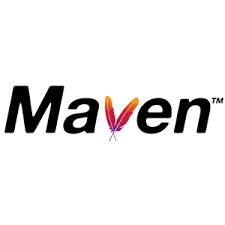
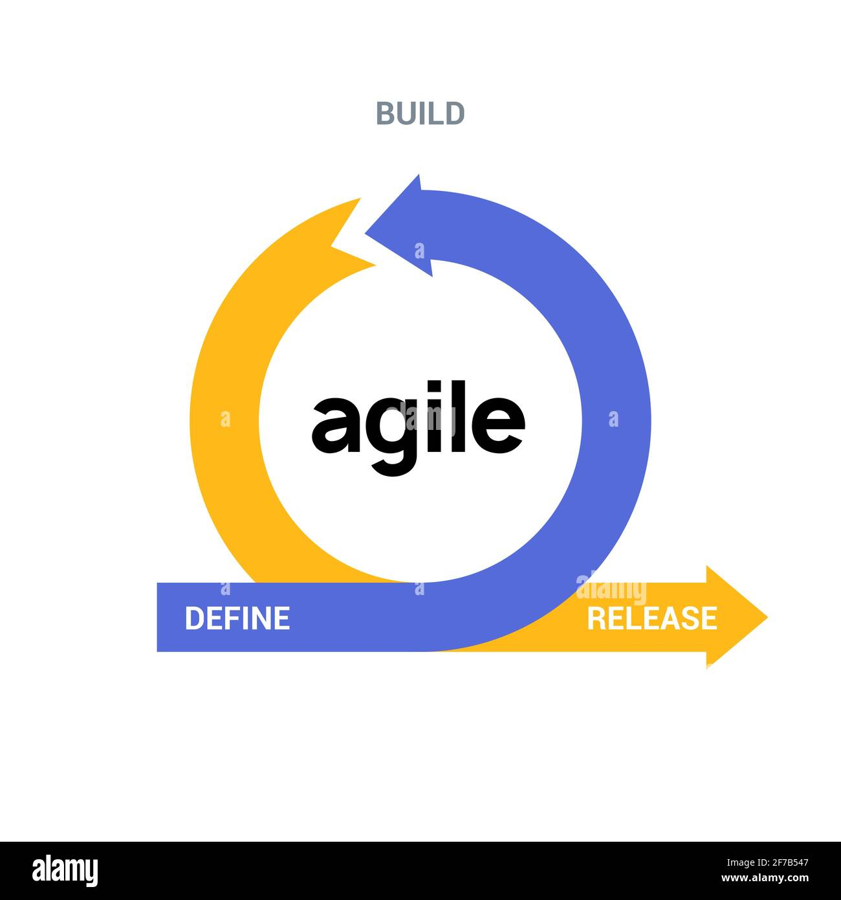

About Me
Dedicated Quality Analyst total experance of ... in Automation and Manual Testing, specializing in web automation using Selenium, TestNG, and Java within the Page Object Model (POM) framework. Proficient in API testing using Postman and familiar with RestAssured for API automation, Appium for mobile automation and Jenkins for CI/CD. Hands-on experience with Eclipse, DBeaver, Postman, Hoppscotch, Swagger, Jira, ensuring seamless integration and up-to-date testing. Strong knowledge of SDLC and STLC.
Contact
- üìû +91 9071075752
- üìß manoj7qa @gmail.com
- üìç Bengaluru, Karnataka
Education
- Bachelor of Computer application
- Jul 2018 – Sep 2021
- Sree Siddaganga College of Arts, Science, and Commerce Tumkur.
Manoj J
Quality Analyst
Skills
Functional testing:-
Technical Skills:-

-

-

-

-

- 
-

-

- 
Tools:-


Experience
Quality AnalystJun 2022 – Present
HyperThink Systems Bangalore, Karnataka
- Performing UI Automation for in-sprint user stories and existing regression test cases.
- Conducting peer code reviews to ensure quality and adherence to best practices.
- Enhancing and maintaining the test automation framework to improve efficiency and coverage.
- Gained experience in integrating the automation framework with the CI/CD pipeline for scheduled 24-hour build execution. Learned to monitor logs to identify and prevent new errors.
- Proficient in Maven configuration and adept at crafting custom XPath identifiers for precise web object localization.
- Skilled in API testing using Postman, ensuring comprehensive validation of endpoints.
- Expert in developing test cases leveraging element locators, WebDriver methods, Java programming, and TestNG annotations.
- Extensive experience in test execution, results analysis, defect reporting, building Selenium-based automation frameworks, and implementing Jenkins-driven regression testing pipelines.
- Successfully converted manual test cases into efficient automated test suites for smoke and regression testing.
- Highly competent in debugging, executing test cases, and analyzing results, with a deep understanding of the Software Development Life Cycle (SDLC) and Software Testing Life Cycle (STLC).
- Meticulously review test cases and collaborate with teams to identify and resolve testing gaps.
- Proficient in managing and delivering daily, weekly, and monthly status reports, ensuring transparency and accountability.
- Consistently review test reports and prepare concise, insightful summaries for stakeholders to support informed decision-making.